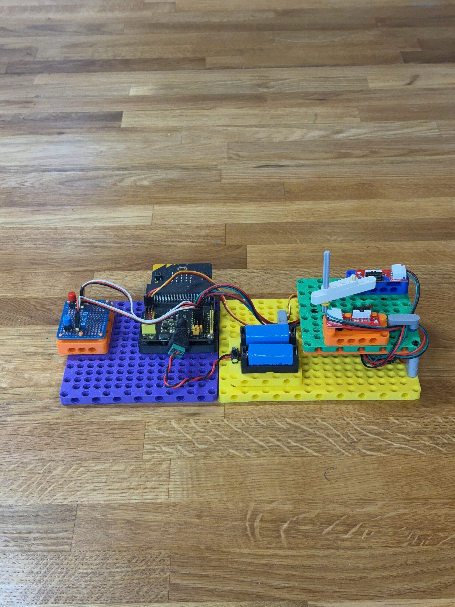
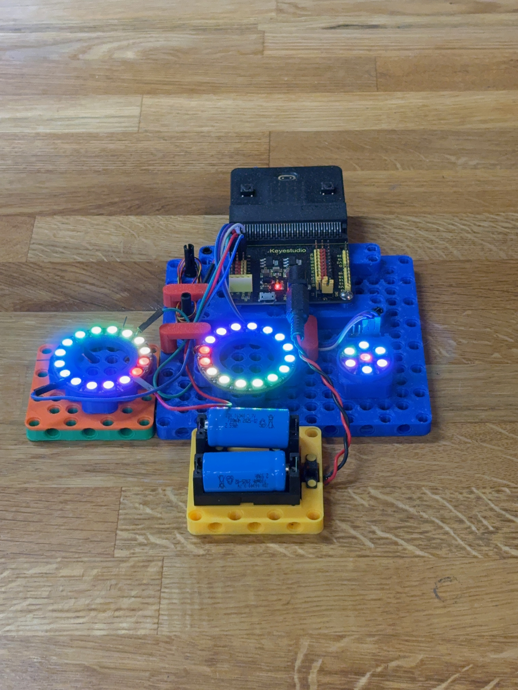

Flag: hardware
104 images with this flag

A group of youth and instructors gather around a table in an indoor classroom setting, engaged in a hands-on coding or robotics activity. Students are working with hardware including what appears to be a small red robot and electronic components, while an instructor in the center guides them through the project. A whiteboard with names is visible in the background, and the scene captures an active, collaborative learning environment typical of The League's programming activities.

Two young people are working together in a makerspace environment, with one person guiding the other as they interact with a keyboard and what appears to be a microcontroller or electronics project. The setting shows shelves of tools and hardware components in the background, and there are electronic components visible on the work surface, suggesting hands-on STEM learning. This captures an authentic teaching moment where youth are engaged in practical coding or electronics work.

Four smiling youth are gathered around a table with computers and electronics during what appears to be a coding workshop or event. They are actively engaged with laptops and hardware components, including what looks like circuit boards and electronic devices. The indoor setting shows a modern facility with glass dividers, and the students are clearly enjoying themselves while working on a hands-on programming or hardware project.

Two young students are at a computer workstation in what appears to be a classroom or coding lab setting. The student in front is seated at the desk with a keyboard and monitor, while another student stands beside him looking at the screen. Both appear engaged and smiling, suggesting an active coding or programming activity.

A classroom scene showing multiple young students engaged in coding and programming activities at computers and laptops. The students are working individually and in small groups around tables, with various laptops and devices visible, while whiteboards with sticky notes and planning materials are displayed on the walls behind them.

A young person is actively working with electronics at a table, holding a red digital multimeter while examining a circuit board or breadboard. A printed worksheet with diagrams and a color-coded legend is visible on the table, suggesting this is a hands-on learning activity focused on electrical circuits and measurement.

Two instructors or mentors are actively engaging with a young student in building or assembling a robotic device. The activity takes place in a classroom or maker space filled with project displays, posters, and educational materials on the walls. The hands-on interaction demonstrates The League's hands-on approach to teaching youth coding and robotics through direct mentorship and collaborative building.

A vibrant scene inside a bright lime-green computer lab shows multiple youth engaged in coding activities at individual workstations. In the foreground, two students work together at a computer, with one typing on a keyboard while both focus intently on the screen. Multiple other students are visible in the background at their own stations, all appearing engaged and collaborative in this hands-on learning environment.

A group of young students are engaged in a coding activity at computers in a bright room with lime green walls. Multiple students are seated at workstations with monitors, keyboards, and headphones, actively working on programming tasks. The scene captures an energetic learning environment typical of The League of Amazing Programmers, with students collaborating and focusing on their screens.

Two students are actively engaged in testing ventilator control software in a modern classroom setting. One student wearing a mask holds white foam ventilator components while examining them, while another student gestures in explanation. The workspace shows hardware equipment, computers, and various materials typical of a hands-on STEM learning environment.

Two young students wearing blue shirts work together at a workbench in a maker space, assembling and testing electronic hardware components and robotics equipment. They are focused on their project, with one student holding a circuit board while the other manipulates a small robotic device. The well-organized lab behind them features yellow storage bins, tools, and equipment typical of a STEM learning environment.

A group of young students and an instructor gathered around a table examining a red robotic device. The children are engaged and focused on the hardware, with an adult in a burgundy shirt guiding their interaction with the robot. This captures an active learning moment where students are hands-on with technology in what appears to be a League coding workshop or class.

Two young students pose next to an iMac computer displaying what appears to be a coding or programming interface. They are smiling at the camera in what looks like a classroom or workshop setting, with bulletin boards and a desk lamp visible in the background. This image captures students engaged with technology in an educational environment.

Two young people are engaged in a coding or design activity at a computer workstation in a vibrant studio environment. An instructor in a pink hat and blue shirt stands behind and points at the screen while a student sits at the keyboard, focused on the monitor displaying what appears to be a design or programming interface. The scene captures an active learning moment with dynamic lighting and an energetic atmosphere typical of a tech education setting.

Multiple youth are gathered around a computer workstation in an indoor learning environment, actively engaged with a desktop computer setup. The students appear focused and collaborative, examining the screen together in what looks like a coding or tech workshop setting with modern facilities visible in the background.

A group of young students are seated at a wooden table in an indoor classroom or computer lab setting, actively engaged with computer workstations. The student in the foreground is smiling at the camera while working at a desktop computer displaying colorful graphics, with other students visible behind them also working at their own stations. The scene captures an energetic, hands-on learning environment typical of a youth coding organization.
A group of young students gathered around a table working with electronics and robotics equipment, with an adult instructor observing and guiding them. The scene shows hands-on STEM learning in progress, with visible hardware including what appears to be a red robot and electronic components. The classroom setting includes a whiteboard with student names and The League's logo visible in the upper left corner.

A group of young students from The League of Amazing Programmers are actively engaged in coding and learning activities at a table with laptops. Multiple students are smiling and appear focused on their work, with instructors nearby supporting them in a bright, colorful classroom environment.

A young student sits at a wooden desk engaged in hands-on programming and hardware work, with a monitor displaying code in the background and an electronic circuit board setup with wires and components in front of them. The student is wearing a yellow long-sleeved shirt and appears focused on the hardware project, demonstrating active engagement in STEM learning. The setup includes a keyboard, mouse, and various organizational storage visible behind the workspace.

Two youth are working together in a maker space, building and programming a robot. They are smiling and engaged as they work with electronics, wiring, and a computer keyboard at a workbench. The space is filled with tools, equipment, and shelving typical of a hands-on STEM learning environment.

Three young students are collaboratively building and working on a robot in a classroom setting. They are focused on assembling or adjusting components of what appears to be a robotics competition robot. The classroom walls display various robotics projects and posters, indicating this is a STEM/robotics learning environment.

A youth student wearing safety glasses is actively soldering electronics at a workbench in a maker space or electronics lab. The student is focused on their work, holding a soldering iron and working with electronic components mounted in a helping hands tool. The workshop environment in the background contains various tools, storage, and equipment typical of a hands-on coding and electronics learning space.

A young child with curly hair wearing glasses and a denim shirt is focused on soldering or assembling an electronic circuit board at a white table. The child is using a soldering iron tool on a motherboard, with various electronic components and hardware visible in the foreground, representing hands-on hardware/electronics learning.

A colorful vector illustration depicting a laptop computer with an orange glowing screen displaying code, surrounded by stylized programming-related elements including small robot characters, plants, stars, and decorative dots on a purple gradient background. This appears to be a generic graphic asset representing coding or computer programming education.

An illustrated card showing programming and gaming concepts with a game controller, code snippets (C++, C), and a stylized laptop or coding interface on a gradient blue and yellow background. The image uses soft, modern 3D-style graphics typical of educational technology materials.

A product photo of a programmable robot car kit featuring a blue chassis with wheels, a black control board with LED displays, dual white sensors on the front, and batteries mounted on top. The robot is designed for educational purposes to teach coding and robotics principles.

A yellow handheld gaming device or electronic toy with a small screen displaying a retro-style video game with red blocks and blue background. The device features multiple black control buttons arranged around the lower portion and appears to be a nostalgic or educational electronics product suitable for a youth coding organization.

A bright blue handheld gaming device or portable game console displayed against a white background. The device features a small screen showing a pixel-art style game with red structures and character sprites, along with a D-pad and action buttons on the front. This appears to be a product shot representing gaming or interactive programming concepts relevant to youth coding education.

An illustration of a micro:bit microcontroller board, shown from above with its characteristic grid of red LED dots, input buttons, and labeled pin connectors at the bottom (0, 1, 2, 3V, GND). The design features a black body with blue accents and a yellow pin header strip.

A robotics or hardware project built on a yellow baseplate featuring a motor, circuit board with wiring, battery pack, and blue structural components. This appears to be an educational STEM or robotics build typical of youth coding and engineering programs.

A young person works with a robotic arm in a workshop setting filled with tools and equipment. The scene shows hands-on STEM learning in what appears to be a maker space or robotics lab, with various tools visible on pegboards in the background and a laptop on the workbench.

A young person wearing a blue cap is working on building or assembling a white mechanical structure or robot in a workshop setting. They are using a measuring tape and surrounded by tools, pegboards with hand tools, and various hardware supplies, suggesting an active hands-on learning environment typical of a maker or robotics program.

Two young students work together at a table with electronics and a laptop, engaged in a hands-on hardware project. One student is holding and connecting components while the other observes, with a computer displaying code visible on the right side. The scene shows an active learning environment typical of The League's coding and robotics programs.

A youth programmer is working with a robotic arm in a workshop setting, with a laptop open for programming and control. The scene shows a hands-on STEM learning environment with tools and equipment organized on pegboards in the background, typical of The League's maker/robotics programs.

A blue and black robotic construction with mechanical arms and legs sits on a wooden floor. The robot features circuit boards, servo motors, colored wiring, and structural pieces made from engineering building materials. This appears to be a student-built robotics project typical of youth coding and engineering programs.

A youth instructor in a yellow hoodie works with four diverse children around a table, building and assembling robotic projects and hardware. The table is filled with various electronic components, circuit boards, wheels, and robotics kits, demonstrating hands-on coding and engineering activities typical of The League's programs.

A screenshot of a retro-style pixel art video game displayed on a handheld gaming device interface. The game shows a character with a red balloon floating above mountainous terrain with flying enemies, reminiscent of classic 8-bit games. The device has a teal/turquoise color with a D-pad, action buttons labeled A and B, and a Menu button, styled like a Microsoft handheld gaming device.

A top-down photograph of an educational robotics project featuring a Raspberry Pi microcontroller board mounted on a black grid platform with red motor modules, colorful jumper wires, a small display screen with green border, and various electronic components assembled together. This appears to be a hands-on hardware project typical of youth coding education, likely built by students at The League of Amazing Programmers.

This image shows a micro:bit LED display matrix with a simple pixel art design illuminated in pink/red. The glowing rectangular LED elements form a pattern on the black background, representing how the micro:bit's 5x5 LED grid can display custom graphics and patterns.

A logo image displaying a stylized green robot or vehicle icon next to the text "CuteBot" in green. The design is simple and appears to be a product or project branding element, likely representing a cute robot vehicle project.

A product showcase displaying the ELECFREAKS Cutebot, a micro:bit smart robot with colorful design elements including wheels, sensors, and an LED display panel. The image shows the robot against a light blue pixelated background with the ELECFREAKS logo and includes text identifying it as a micro:bit smart cutebot educational robotics product.

A top-down view of a micro:bit robot car with blue and white striped body, showing the internal hardware including battery compartment, circuit board, wheels, and electronic components. The image includes a label pointing to the switch mechanism at the bottom.

A micro:bit robot car kit displayed against a white background, featuring a blue and gray chassis with two white sensor modules on the front, a circuit board control unit mounted on top, batteries on the side, and black wheels with silver rims. This is a complete educational robotics platform designed for youth programming and hardware projects.

A micro:bit microcontroller board is displayed against a white background, showing its distinctive black circuit board with a gold LED matrix grid in the center, pink accent triangles on the side, and gold connection pads along the bottom edge. This is a product shot of the popular educational hardware used in coding education.

A screenshot of the Microsoft MakeCode interface for micro:bit programming. The screen shows the Blocks editor with a micro:bit device visualization on the left displaying LED patterns, and a color-coded menu of programming blocks (Basic, Input, Music, Led, Radio, Loops, Logic, Variables, Math, Extensions, Advanced) on the left. The main coding area on the right shows a 'forever' loop with 'show icon' blocks.

A product photo showing a blue netbook/laptop with a micro:bit microcontroller circuit board and its accessories laid out below it on a wooden surface. The image displays the micro:bit board, a battery pack, a USB cable, and what appears to be instructional documentation, representing the complete hardware kit used for coding education.

A Dell laptop displays the MakeCode editor interface with a micro:bit project open, showing a blue robot illustration and programming blocks. Connected to the laptop via USB cable is a micro:bit device with its characteristic red LED grid display visible, along with a battery pack, demonstrating a complete coding setup for The League of Amazing Programmers.

A product card for the 'servo' micro-servo library, featuring a stylized illustration of a servo motor component on a coral red background with decorative technical elements. The card includes the title 'servo', subtitle 'A micro-servo library', and a 'Learn More' link.

This image shows a data center or server room featuring rows of large server cabinets and hardware infrastructure. The industrial space has exposed silver ductwork, fluorescent lighting, and a raised floor typical of enterprise computing facilities. There are no people visible in this professional technology environment.

Three young people pose together in a computer lab classroom setting, displaying their coding work on laptops. An adult instructor stands on the left while two students proudly show their programming projects on screens displaying code and development environments. The room features multiple computers, monitors, and windows overlooking greenery, creating an authentic educational environment.

Three young students sit together in a computer lab classroom, smiling at the camera. The room features multiple workstations with iMac computers displaying The League of Amazing Programmers logo on one screen. The students appear to be posing for a group photo in what looks like an indoor educational facility with beige walls.

A group of six young students in a classroom setting with computers and monitors visible in the background. They are posed together facing the camera, smiling, in what appears to be a coding or computer lab environment. A whiteboard with sketches and writing is visible on the left wall.

An adult instructor demonstrates or teaches programming concepts to two youth students in an indoor classroom or lab setting. One student sits at a desk with a computer monitor while another wears a red cap, and the instructor stands holding what appears to be a microcontroller or electronic component. The scene captures an active teaching moment in what looks like The League's coding education environment.

An indoor classroom scene showing a male instructor leading a group of youth students during a coding lesson. The room features computers at workstations, a whiteboard with drawings, and fluorescent ceiling lights. Multiple children are gathered around listening to the instructor, creating an authentic teaching moment in what appears to be a League of Amazing Programmers session.

Three young people collaborate on assembling or working with a robot chassis in a classroom setting. They are focused on building hardware together, surrounded by educational posters and project displays on the walls, indicating this is a youth coding or robotics program environment.

A group of young students are gathered around laptops in a modern tech classroom or lab environment with bright green and colorful walls. Multiple students are actively engaged with computers, smiling and collaborating together. An instructor or mentor can be seen in the background, and the space appears to be part of The League of Amazing Programmers' coding education program.

An adult instructor works one-on-one with young students at computers in a classroom setting. Multiple students are visible working on laptops, with an older male mentor engaging with students at a table. The environment appears to be an indoor educational space with wooden doors and typical classroom furnishings.

An oscilloscope display showing an electrical waveform measurement with voltage and frequency data. The screen displays a yellow square wave pattern with measurements including Vmax (3.35V), Vmin (0.02V), Vave (1.65V), Vrms (2.32V), Vpp (3.37V), frequency (0.050kHz), duty cycle (50.0%), and cycle time (20.000ms). This is a screenshot of oscilloscope software or hardware used for electronics analysis and measurement.

A flat-lay product photograph showing various electronic components and hardware used in robotics or maker projects, including circuit boards, motors, servos, wiring harnesses, and control modules arranged neatly on a gray surface. This appears to be a kit or collection of parts for building motorized projects, typical of what The League of Amazing Programmers would use in their youth coding and robotics curriculum.

A flat-lay product photo of various electronic components and hardware used for robotics and motor control projects, arranged neatly on a gray background. The collection includes servo motors, a microcontroller board, circuit boards, jumper wires, connectors, and other electrical components. This appears to be a kit or collection of parts for The League's motors clinic curriculum.

A photograph of a Keyestudio circuit board module with a Cytronix 80P connector at the top. The black PCB board features various electronic components including resistors, capacitors, and connector pins arranged in rows (numbered 0-7 on the sides) with red and yellow terminal blocks. This appears to be a motor control or expansion board commonly used in educational robotics projects.

A Dell laptop is connected via USB cable to a microcontroller board (appears to be a micro:bit or similar educational circuit board) with an LED grid visible on top and colorful component headers below. The laptop screen displays what appears to be a programming interface or application. This setup demonstrates a typical hardware-software integration used in youth coding education.

A close-up photograph of an electronic circuit board with green terminal blocks at the top, various resistors, capacitors, and integrated circuits on a blue PCB base, and connector pins at the bottom. This appears to be a motor control or driver module used in robotics projects.

A blue microservo motor (labeled SG90) photographed against a white background with colored wires (red, yellow, brown) attached. This is a common small servo motor used in robotics and electronics projects, typical of components used in youth coding and hardware education.

A flat-lay product photo of microcontroller hardware components arranged on a dark surface. The image shows a micro:bit board (top left), a battery pack with red and white wires (left), white USB cables, and a black USB cable connector (right). These are typical components used in educational coding and robotics projects.

A Dell laptop is connected to a microcontroller board (appears to be a micro:bit or similar educational circuit board) with USB cables. The board features colorful components including an LED matrix display and is positioned on a dark surface next to the laptop. The laptop screen displays what appears to be a programming interface or application window.

A flat-lay photograph of electronic testing and measurement equipment displayed on a gray surface. The kit includes an oscilloscope with a yellow-green rugged case and digital display, various probe cables with connectors, a soldering iron with stand, and test leads with alligator clips. This appears to be a typical electronics troubleshooting or repair kit used for measuring electrical signals and testing circuits.

A small electric motor with a gray metal cylindrical housing and a white plastic mounting bracket or base. The motor has a protruding shaft and appears to be a basic DC motor commonly used in educational robotics and electronics projects.

A circuit board showing electronic components including a ULN2003AN motor driver IC chip, four resistors labeled R5-R8, a white connector block with positions A-B-C-D, and mounting holes. This appears to be a motor control circuit board commonly used in educational robotics projects.

A hands-on electronics project setup on a wooden workbench featuring multiple circuit boards with colorful wiring, servo motors, and microcontroller components. The assembly includes blue and green mounting plates, various colored jumper wires, and what appears to be a robotic arm or mechanical construction in progress, typical of League of Amazing Programmers hardware projects.

A student-built robotics project displayed on a wooden floor featuring a blue platform base with mounted electronic components, motors, circuit boards, and colorful wiring. This appears to be an educational robotics build typical of League of Amazing Programmers coursework, showcasing hardware integration and mechanical engineering.

A colorful robot built with modular construction blocks in blue, orange, yellow, and purple. The robot features two round sensor eyes on top, a black servo motor for a mouth, a circuit board and battery pack in its body, and various electronic components connected with colored wires. It's photographed on a wooden floor and represents a hands-on electronics and robotics project.

A colorful electronic circuit project built on plastic baseplates featuring multiple circuit boards, wiring, blue batteries, and various electronic components arranged horizontally on a wooden floor. The project demonstrates hardware assembly and electronics work typical of hands-on coding and robotics education.

A student-built robotics project displayed on a wooden floor, featuring a DC motor mounted on a colorful plastic base (yellow and orange) with blue structural components. The assembly includes a circuit board with wiring, battery pack, and mechanical components typical of beginner robotics builds from The League.

A colorful electronics project featuring a Keyestudio microcontroller board mounted on blue and colored plastic frames with three illuminated LED ring modules (displaying white, multicolor, and blue lights), red and blue wiring, and a yellow battery holder with capacitors on the wooden floor. This appears to be a student-built hardware project, likely a light show or programmable LED display creation.

A vector illustration of a simple robot with a gray body, white panels, and orange accents. The robot has two orange circular eyes on its head and an orange lightning bolt symbol on its chest, suggesting energy or power. This appears to be a stylized mascot or icon design.

A simple vector illustration of a cartoon robot with a gray body, orange circular eyes, and an orange flag with a lightning bolt symbol on its chest. The robot is drawn in a minimalist style with clean lines and geometric shapes, suitable for educational or branding purposes.

Two programmable microbit robots are displayed against a gray background. On the left is a red and blue Cutebot with a round body design and control buttons, while on the right is a yellow and blue wheeled robot with a more complex chassis. Both feature circuit boards, wiring, and electronic components typical of STEM education kits.

A small educational robot with a green battery and blue chassis on wheels is shown with its internal components visible. Next to it are a bright green ball and colorful stacked foam blocks (blue, orange, and yellow), which appear to be props for robotics activities or competitions.

Multiple programmable robots displayed on a dark table, featuring micro:bit-based Cutebot robots with colorful add-ons including bright green and red spheres, orange cubes, and illuminated features. The robots showcase various configurations with wheels, circuit boards, and sensor attachments typical of The League's educational robotics kits.

A micro:bit-based robot kit displayed on a wooden floor. The robot features a black micro:bit controller board mounted on top, yellow and blue plastic structural components, wheels, servo motors with red and orange wires, and mechanical arms or grippers. This appears to be an educational robotics project typical of youth coding programs.

A robotics project built with construction-style components sits on a wooden floor. The robot features a modular frame made of light-colored plastic connectors, wheels, electronic components including what appears to be a microcontroller board, and colored wiring. This appears to be an educational robotics kit typical of youth coding programs.

A small educational robot kit displayed against a blue background, featuring a blue chassis with wheels, a blue battery pack mounted on top, electronic components including a circuit board labeled 'SOWBOT', and various mechanical parts. This appears to be a hands-on robotics project typical of youth STEM education programs.

Two small programmable robots displayed on a bright blue background. On the left is a red robot with a blue attachment and buttons, while on the right is a blue and white robot with wheels and circuit board components visible. Both appear to be educational robotics kits designed for learning programming and robotics.

Two small green robotic vehicles displayed on a blue background, each featuring a perforated plastic body, wheels, and a small LCD screen displaying pixelated graphics. These appear to be educational programming robots, likely used for teaching coding concepts to students.

A small robot built with blue and yellow plastic construction pieces, featuring a microcontroller board, motors with wheels, and wired connections. The robot is photographed on a wooden surface and appears to be an educational robotics kit project typical of youth coding programs.

A small red robot with exposed circuit board components sits on a white mat with black curved lines, surrounded by colorful 3D blocks and shapes positioned at various marked points. This appears to be a League of Amazing Programmers educational robotics setup, likely for demonstrating robot movement and programming concepts.

A small orange robot with a visible circuit board and wheel is positioned on a white mat with black lines and circles, appearing to be in a robotics learning environment. The mat has colored blocks (yellow, red, green, and purple) placed in circular zones, suggesting this is a programming or robotics challenge setup. The setting appears to be indoors on a wooden table with computer equipment visible in the background.

A young person is actively working on a 3D printer in a maker space workshop, using a measuring tape to check dimensions or alignment on the machine. The workshop is filled with tools, pegboard storage, and various equipment visible in the background, creating an authentic hands-on learning environment typical of youth coding and maker education programs.

A custom-built robotics project is displayed on a concrete floor, featuring a metal chassis with exposed wiring, motors, wheels, and electronic components. Large yellow storage bins are visible in the background, suggesting this photo was taken in a makerspace or workshop environment typical of The League of Amazing Programmers.

A VEX Robotics or similar educational robotics kit assembled on a wooden floor. The robot features blue and black structural beams, a microcontroller board, servo motors, colorful wiring, and what appears to be mechanical arms or attachments. This is a hands-on STEM learning project typical of youth coding and robotics programs.

A collection of educational robot kits displayed on a dark surface, featuring multiple micro:bit-based robotics projects. The robots include wheeled vehicles with LED lights, circuit boards, and colorful 3D-printed components in blue, green, yellow, and orange. These appear to be student-built projects typical of youth coding education programs.

A group of young students in a modern classroom are engaged in a robotics coding activity. The girl in the foreground, wearing a yellow sweater and denim overalls, smiles at the camera while holding a small robot she's building. Her classmates sit beside her at a table, also working with robotics kits and electronic components in a well-lit educational environment.

An instructor in a yellow hoodie works with four children at a table building and assembling robotics projects and electronic devices. The bright, modern classroom setting features large windows with outdoor views, shelving with educational materials, and various robot kits and circuit boards scattered across the work surface. The children are engaged in hands-on STEM learning, working with components like yellow-wheeled robot bases and electronic circuits.

A group of young students are seated at a table during a coding or programming activity. Two girls in the foreground are turned toward the camera with pleasant expressions while working on a laptop, with additional students visible in the background also engaged with computers. The scene appears to be set in a classroom or workshop environment focused on technology education.

A group of six young students pose together in a bright, modern classroom or tech workspace. They are holding various items including a laptop, robot, blueprints, and a book, suggesting a STEM or coding education setting. The students are arranged casually with some standing and one sitting, displaying a collaborative and creative atmosphere typical of a youth technology learning environment.

Three young students work together on a coding or robotics project in a bright classroom with blue walls. They are engaged with electronics, wiring, and a laptop, appearing to be collaborating on hands-on STEM learning. The scene captures an active learning environment typical of youth coding programs.

A colorful illustration depicting a young person with red hair and glasses working on a laptop, surrounded by tech-themed elements including gears, circuit boards, code snippets, and speech bubbles. The scene features a vibrant 3D paper-cut art style with a turquoise digital background, clouds, and various programming-related graphics that emphasize coding and technology education.

A young child with blonde hair wearing a blue shirt is focused on holding and examining a mobile device or tablet outdoors. The child appears engaged and concentrated on the screen, with a blurred green background suggesting an outdoor setting. The image captures a moment of tech interaction in a natural, candid style.

A colorful flat lay composition on a bright yellow background featuring various robots and electronics projects. The image shows a cute blue cartoon-style robot in the center, flanked by four different hardware builds including motorized robots with mechanical arms, circuit boards (including an Arduino UNO), sensors, and electronic components with wiring. This appears to be a styled product photo showcasing robotics and electronics education kits.

A young person wearing a yellow shirt works with an electronics circuit board setup, featuring a microcontroller board on the left and a breadboard with colorful wires and components on the right. The person is focused on assembling or testing the electronic hardware components in what appears to be an educational or maker environment.

A composite image showing a young person working on a laptop with overlaid digital UI elements displaying code and programming interfaces. The scene includes file browser windows, code editor panels with syntax-highlighted Arduino-style code, and visual programming elements with orange accents. In the background, hands are visible working at the desk with a laptop and what appears to be electronics or hardware components on a turquoise surface.

Two young people work together at a computer setup in a colorfully lit room, with one person seated at the keyboard and monitor while another stands beside them pointing at the screen. The scene shows a collaborative coding or design session with hardware visible on the desk, set against a vibrant background with orange and blue lighting. The casual, staged setting with props and dramatic lighting suggests this is a carefully composed stock photograph rather than candid documentation.

A young student is focused on soldering or working on electronic circuit boards and hardware components at a workbench. The setup includes various tools like a soldering iron, magnifying glass, and multiple green circuit boards, suggesting a hands-on electronics or robotics learning activity typical of youth coding programs.